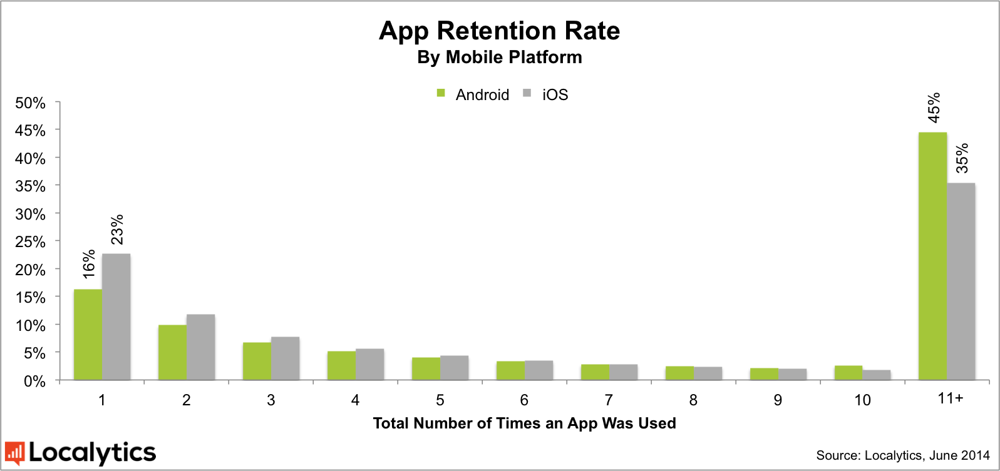

Mobiilne arenduskeskkond on väga vitaalne, kuna kasutajate jaoks on nutiseadmed igapäevases kasutuses. Kasutajate nõuded meeldiva visuaaliga, funktsionaalse ja kõrgete käideldavusnäitajate järele on märgatavalt kõrgemad, kui seda on traditsionaalsete lahenduste puhul (kus kasutajad on valmis teatud probleeme või ebamugavusi aktsepteerima).
65% iOS rakendustest on arendatud „riiulile“ ning ei ahvatle kasutajaid neid kasutama, ainult 35% rakendusi kasutati 2014. aastal aktiivselt. Android analoogne rakenduste kasutamise aktiivsusnäitaja on ca 45%9 (vt joonis 1). Aktiivseks kasutuseks on viidatud artiklis loetud rakenduse avamist 11 või enam korda. 2014. aastal on toimunud murrang, kus Android platvormil põhinevate rakenduste kasutamisaktiivsus on ületanud iOS oma. Analoogsed analüüsid ja näitajad Windows Mobile platvormile ei ole kättesaadavad.

Joonis 1. Rakenduste kasutatavuse ülevaade
Kõikide ametlike levituskanalite puhul hinnanguliselt 85% või rohkem kõikidest rakendustest on saadaval tasuta (millest tulenevalt ka nende levik on aktiivsem ning valik mitmekesisem)10.
Eraalgatusel on tänaseks Eestis loodud mobiilsele platvormile mitmeid elektroonilised identiteedi ja digitaalse allkirjastamise laiendusi (DigiDoc klientrakendused ja teegid). Nendest enim kasutatud on Finestmedia AS ja EMT koostöös poolt arendatud, millega anti keskmiselt 2861 allkirja kuus11. Detailsem võrdlus olemasolevatest rakendustest on dokumendi lisas (vt Lisa 6). Lisaks allkirjastamise rakendustele on turul rakendusi, kus autentimine ja/või allkirjastamine on toetatud. Antud rakendused on vastavate ettevõtete veebiteenuste laiendused mobiilsetele platvormidele (nt Swedbank, SEB, Nordea, Elion jt) ja teadaolevalt ei kasuta eID tarkvara ametlikke teeke.
Avaliku- ja erasektori turvalist autentimist või allkirjastamist nõudvate e-teenuste arendamine ja kasutamine nutiseadmetes on seni olnud üsna piiratud toetusega:
Olukorra lahendamiseks peaks eID tarkvara arendusmudel olema optimeeritud ja välja töötatud mobiilivaldkonna arengutega koosmõjus toimivaks.
eID kontseptsiooni laiendamisel mobiilsele platvormile on riigil võimalus valida, kas:
[9] 65% of Apple Inc iOS apps failing to entice users (DazeInfo. June 2014) [URL]
[10] Erinevatest allikatest rakenduste ülevaadete alusel eristuvad kommunikatsiooni- ja suhtlusmeedia rakendused (Gmail, Facebook, Twitter, Instagram, Skype, Pandora, YouTube jt) ja mängud (AngryBirds, FruitNinja, Doodle Jump, Cut the Rope jt). Neile valdkondadele järgnevad erinevad töövahendid ja rakendused, mis sõltuvad kasutajate spetsiifikast (nt parkimisrakendused, pildi- ja fototöötlus, dokumentide koostamine/lugemine jt). 2014. aasta detsembri seisuga ei erinenud Eesti vastav statistika maailma trendidest kuigivõrd (esile saab tuua panganduse, TV ja parkimisega seotud rakendusi – Swedbank, SEB, Nordea, minuTV, Pargi, Taxify).